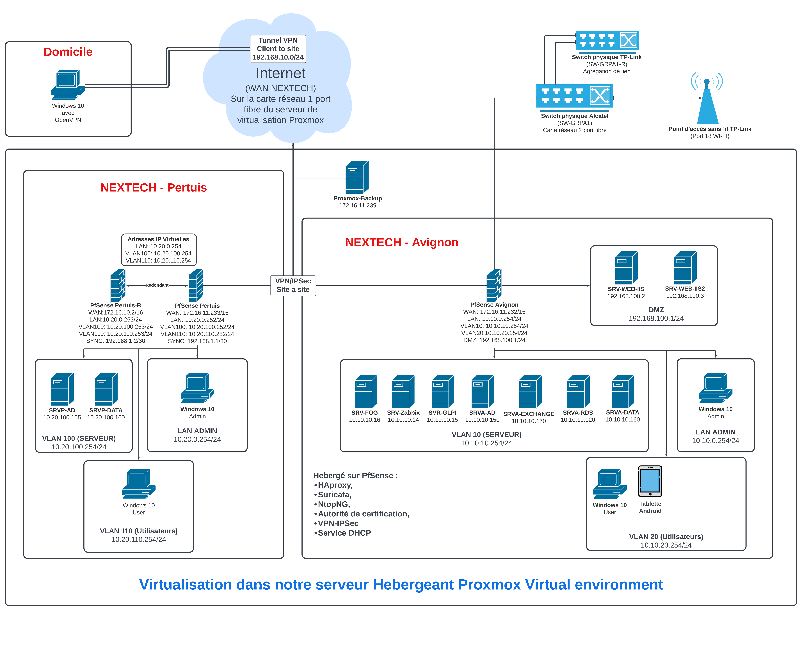

BTS SIO option SISR
Deux ans consacrés à l'administration des systèmes et réseaux, en alternance : les cours à Nextech, la pratique en entreprise chez Absys Informatique.
Projet principal
Infrastructure multi-sites
Conception d'une infrastructure multi-sites pensée pour la haute disponibilité.
- Virtualisation avec Proxmox
- pfSense avec VPN IPsec et CARP
- Active Directory redondant
- GLPI et Zabbix pour le parc et la supervision
- HAProxy et DMZ IIS
- Sauvegardes Veeam et déploiement de postes avec FOG
ProxmoxpfSenseIPsecCARPActive DirectoryGLPIZabbixHAProxyVeeamFOG


Compétences mobilisées
Windows ServerLinux DebianProxmoxpfSenseActive DirectoryGLPIZabbixVeeam
← Retour au parcours